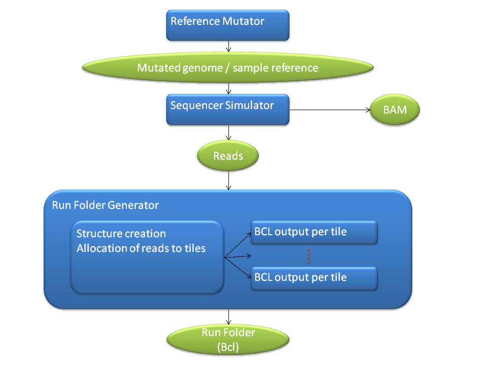
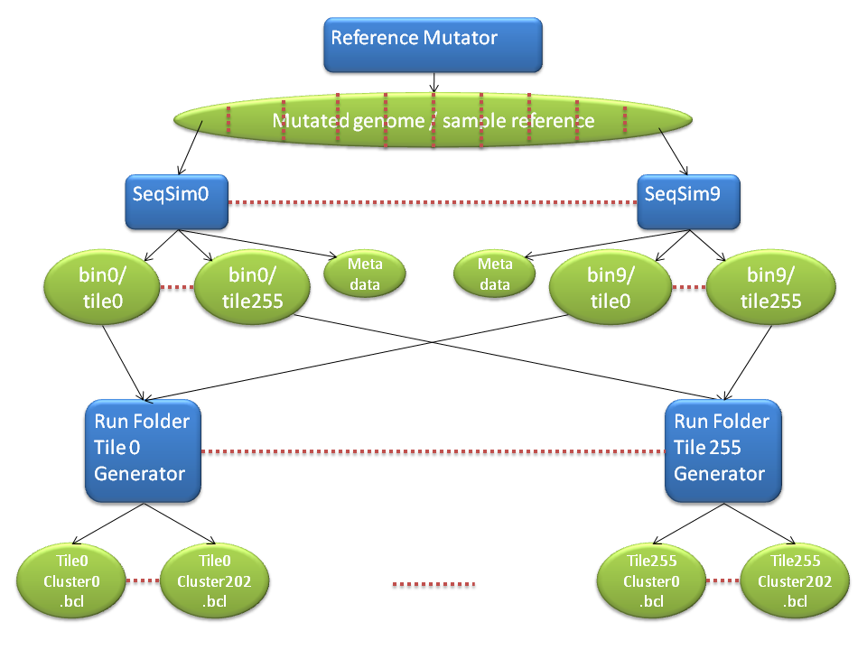
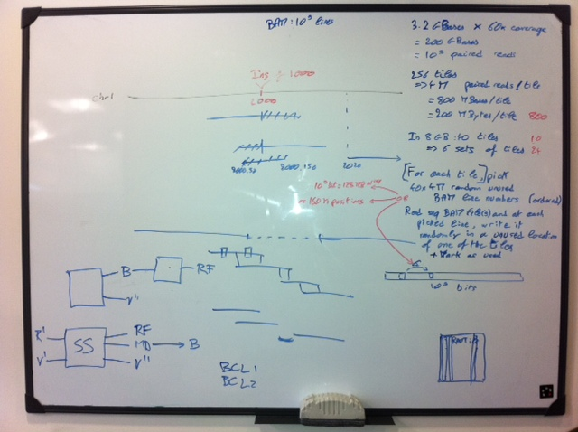
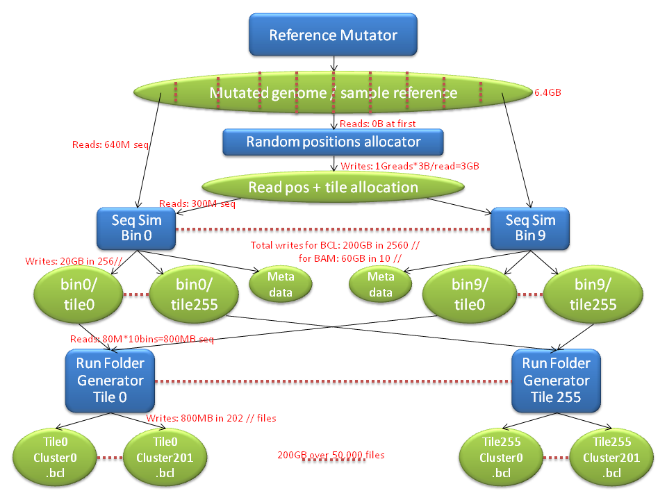
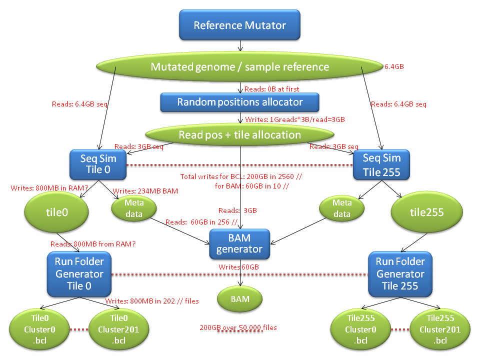
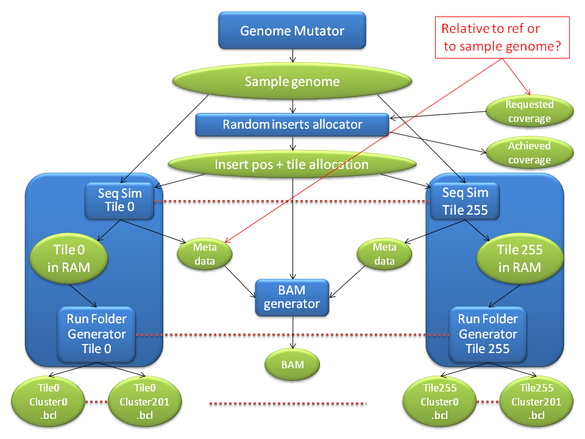
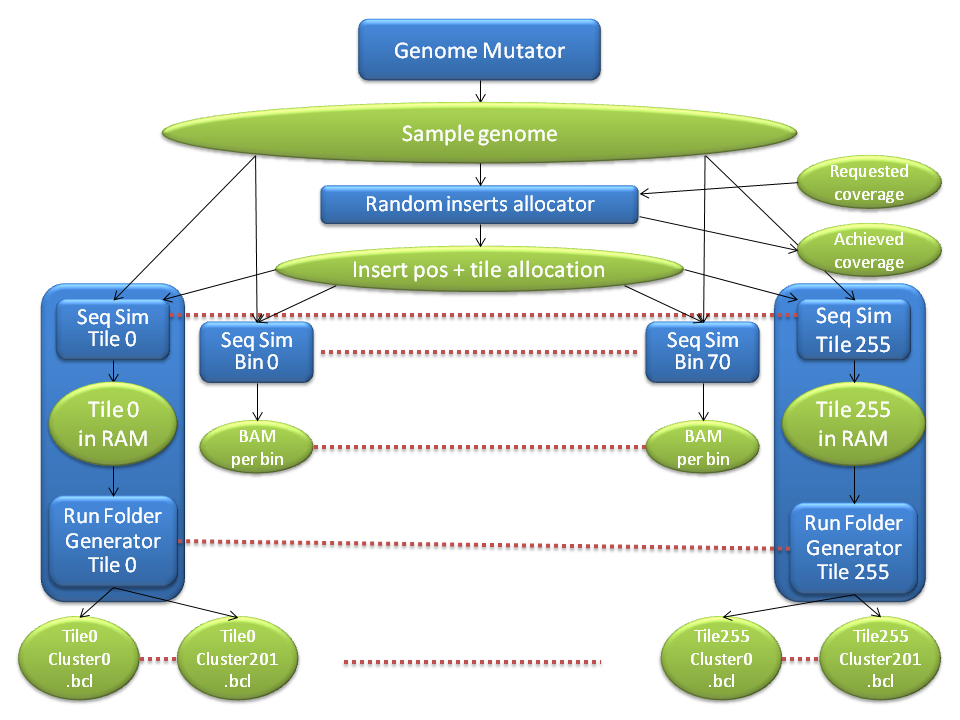

Architecture and Process ideas
Can we make it so that it works first by being just a fasta->bcl converter, then add everything as plugins?
For example, the PCR giving more reads in repetitive regions, taking into account UCSC gaps, % of reads that pass filter, etc.
Idea 1
Top level architecture
This high level architecture was described for Idea 1, but is still valid in the final ideas.

Process
- Read the 6.4GB of input fasta files to RAM
- Prepare one tile in RAM while flushing the previous tile to disk. To prepare a tile:
- Pick a random location
- Read 100 bases while applying the error model described below
- Add each base to its associated bcl file, based on the cycle
- Process paired read in a similar way if required
Error model
Inputs
- Quality per cycle table
- Error model: Probability for each nucleotide type to become each other nucleotide (SNP), to be deleted or duplicated.
Process
From the "Quality per cycle table", we calculate the error rate for the current cycle.
If a random number is under the error rate, then we apply the "Error model" to the base.
By remembering the current "read quality" (or just the number of successive same base encountered so far) for this read, we update it to take into account homopolymer runs.
If a random number is under this "homopolymer error rate", we apply a "homopolymer error model" to the base.
Problems
Picking random reads had already made us leave the "coverage standard deviation" property out.
Our initial thoughts were to leave the BAM generation as a secondary external process, but some new "coverage threshold" parameters, which seem very valuable, bring back the need to generate metadata associated to genome positions during the simulation.
Applying "quality control" on specific locations requires us to search through the list of locations and update an associated property each time we generate a new read. If the list of locations becomes large - the ability to characterise the entire genome may be useful - the cpu and ram usages may become too high.
This is addressed in a better way by the next process idea.
Idea 2
The idea is to generate reads by going through the genome sequentially, and keep the shuffling for the end when we write the BCL files.
Advantages:
- BAM and metadata information can be generated on the fly, while keeping only a small region of the genome in RAM (probably the size of the max insert/mate size), input fasta files don't need to be entirely stored in RAM, etc.
- avoid the wasteful process of shuffling data and then having to sort it back when we want to generate the BAM files.
- BAM files are available early, enabling the user to check the simulated data before launching the subsequent tools under test.
- Can be split into independent chunks easily for parallel processing
The new difficulty is shuffling the reads for BCL output.
Possible parallelisation of tasks:

Process

Same as for idea 1, but instead of picking random read locations, the locations will be picked sequentially, in chromosome order. The random element will be the length (which can be 0) of the jump to the next read.
We will also output a random allocation of a tile for each paired read (1 byte/paired read => 1GB), so that the BCL creation process (which will involve shuffling) can be done in parallel.
The BCL creation will then happen at the tile level, where each process generates 1 tile by reading the allocation file sequentially, loading the corresponding paired read to RAM by reading the 100GB data file sequentially too (with possible fseeks) and then flushing the tile when it has been fully prepared in RAM. This can be optimised by processing sets of tiles per process instead of only 1 tile.
Sequencer Simulator details:
Costs

Idea 3
The cost analysis of idea 2 shows 200GB of data being temporarily written and read.
Idea 3 shows that this can be avoided.
Instead of parallelising the Sequencer Simulator per bin, we can parallelise it per tile:

Another consequence on cost improvement is that, in the previous idea, the Metadata (BAM) file and the tile files were imbalanced in size, possibly leading to bottlenecks when writing the BAM files.
With idea 3, this is solved.
Process
The Seq Sim and the Run Folder Generator need to share their RAM, so we'll probably integrate them as 1 process.
However, One Run Folder Generator can still run in parallel with the next tile's Seq Sim. We need to check how long each of these 2 processes take, and if the overlap is sound.

The BAM generator will probably have more work to do than expected: as the metadata will likely be ordered relatively to the sample genome, it will have to be re-ordered relatively to the reference genome. We expected that it would involve merge-sorting the reads from the different tiles, but it will also involve merge-sorting the reads from the different alleles, and splitting/duplicating the reads that overlap breakpoints.
Idea 3b
Based on Idea 3, it may be worth replacing the Metadata output by a second processing of the same inputs, as shown on the following diagram. The BAM generation may be done at a chromosome bin level.

Final Architecture choice
Tasks
- Identified a new requirement: We need FastaReader to read on demand and at the same time to provide the total chromosome lengths. We can achieve this by using the usually existing genome_size.xml file. Maybe we should then allow for directory inputs. This could be compatible with the mutator's "-c chrY -l 0" options when a female is needed.
{kind=link}
{kind=link}
{kind=link}
{kind=link}
{kind=link}
{kind=link}
{kind=link}
{kind=link}